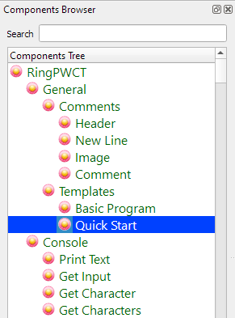
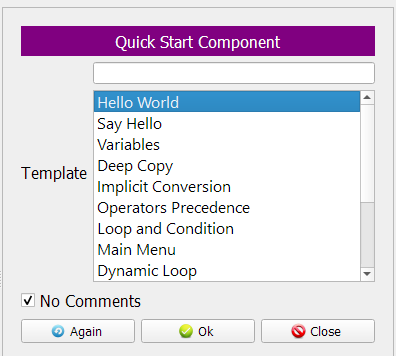
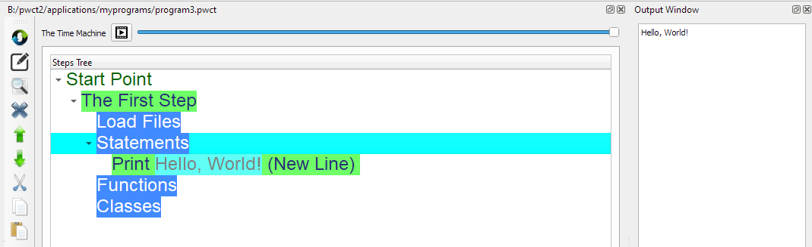
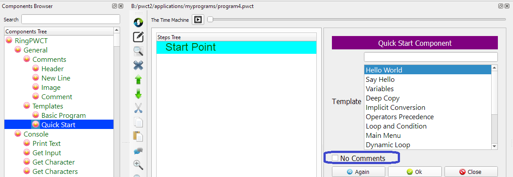
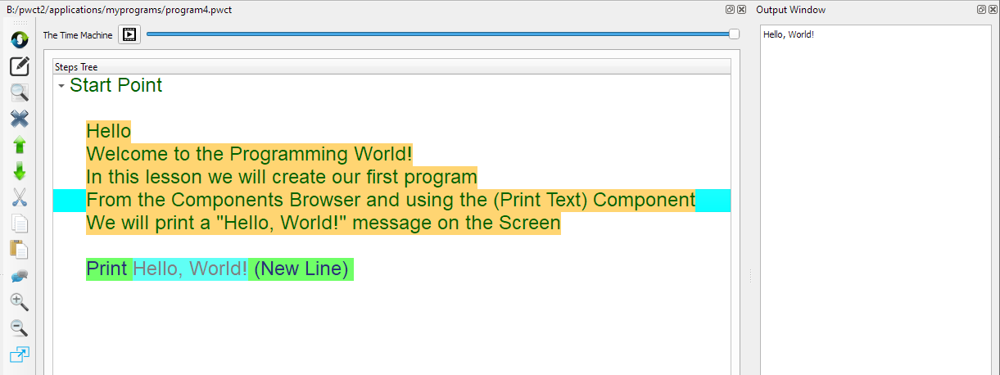

Quick Start component¶
In this chapter we are going to learn how to use the Quick Start Component
Introduction¶
Using the Quick Start component we can try some samples quickly
Selecting the Component¶
From the Components Browser select (Quick Start)
The Interaction Page¶
After selecting the (Quick Start) component
We will see the next interaction page
Steps Tree¶
Selecting the (Hello World) Template will generate the next steps
No Comments checkbox : Active
Adding Comments¶
When we use the Quick Start component we can disable the (No Comments) checkbox
This will generate the comments too
